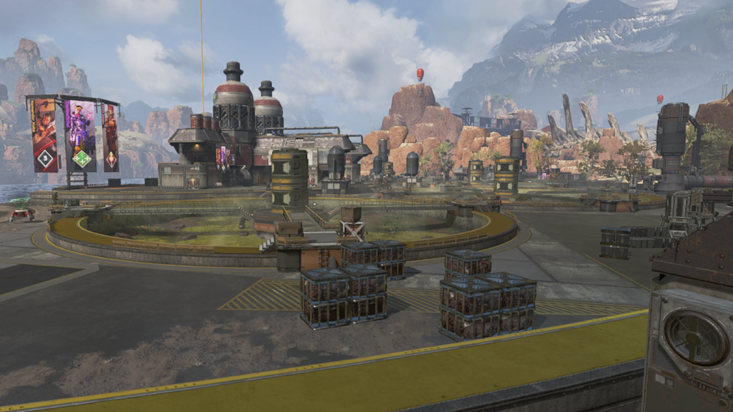
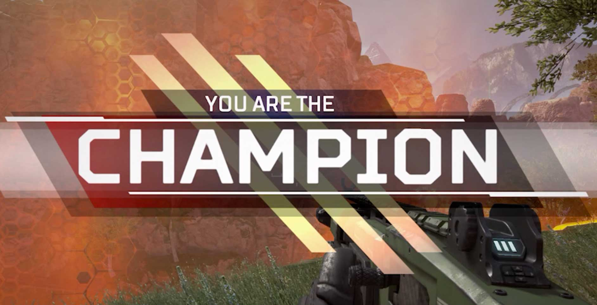

In this article, we will present to you the hiding strategy as well as some tips that make it work. You can find a detailled presentation of the legends that fit that strategy here.
To begin with, you must understand and accept one key principle: winning is ranking 1st. Taking fights and getting kills are preventing you from reaching that goal. That principle means you have to do whatever it takes to be the last team alive. If you can take a gun and run around killing everyone while never getting hit, congrats, you are done with this guide because there is nothing useful we can teach you. If this is not your case, don't worry! Our strategy will allow you to get a fairly high ratio of wins if you follow it.
Landing
Your jumpmaster must ban every hotspot from his mind: dropships, high tier loot zones and very popular areas have to be avoided. The only case where you can drop in one of these areas is when that area is at the end of the ship trajectory and no one else is going to contest it. We advise you to pick the same LZ every time so you know exactly where the loot is and you can split it evenly with your squad. That way, you have enough stuff quickly. The other 2 squadmates have the mission of giving intel about the other teams to the jumpmaster so he can change the trajectory if other squads are going to your LZ.
Some safe landing spots are close from hot zones. If you have the intel that no other team dropped there and you are missing key equipment pieces (armor, weapons, helmet, ...), you can finish looting there. Make sure no ennemy team is there by using a Crypto/Bloodhound recon skill or a long range scope if you have one. We usually land in the houses North-West from Water Treatment. This spot is usually never contested and we all find enough loot to survive in early game.
High elo tip: If you want to make a riskier play and earn more RP, we advise you to third party teams at Water Treatment. If you loot fast enough and wait for the teams that landed Water Treatment to start fighting, you can backstab the remaining ennemies and finish looting. We however recommend to not go there if only one team landed Water Treatment.
Mid Game
After your initial loot phase, you must run to the best hidding spot. Do not necessarily rush for the closest one: if the closest spot is not in the zone, you will have to run away and find another one too soon. The goal is to find a safe spot that will remain in the zone until the end of the game if possible. Use your Pathfinder to get zone knowledge early on in order to make the best choice. When your choice is made, you must run and never stop. Use your scopes and scanning abilities to avoid ennemy teams, take advantage of sound spacialization so you know where the other teams are. The jump towers are safe ways of locomotion, assuming no ennemy is nearby when you use them. Your Pathfinder can also use its zipline to shorten travels between 2 jump towers. If people start shooting at you, you can jump while using the zipline to make yourself harder to hit.
If a team shoots at you and you have no way of retreating all together: leave a team member behind. Try to save your Pathfinder and your Octane for later so you can hide but it is ok to leave the 3rd team member behind. A Wraith or a Bangalore can delay the ennemy team with Into the Void and the Smoke Launcher.
Once you have reached your hidding spot. You have to make sure the area is secured. Again use scopes, sound and scanning abilities to ensure the area is cleared. Finally, you can hide!
High elo tip: We know it is tempting to start a fight when you have scouted another team. Try to refrain your fighting spirit, keep it for later. Only start a fight if the other team just finished fighting. That way, you maximize your chances of killing and keeping the fight short so you do not waste time. Keep in mind: survival is the priority.
Late Game: Time to Win
You are at your hiding place, and now you have to pay attention to the kill feed and the remaining teams. When there are only 3 remaining teams (yours included), you have to be ready. Restrain your recon legend from using recon abilities, they could reveal your position. Try to sound the other 2 teams so you have an idea of where they are. When they start fighting, you can leave your hiding spot. Remain hidden until you see the team counter hit "2". Now is your time. Scan or scout them and rush the remaining team, they are at their weakest! Use the dead bodies loot if your need to restore your armor. Now enjoy the win that our strategy bought to your team!